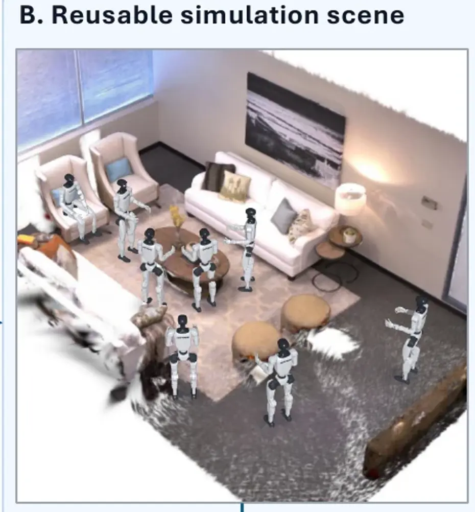
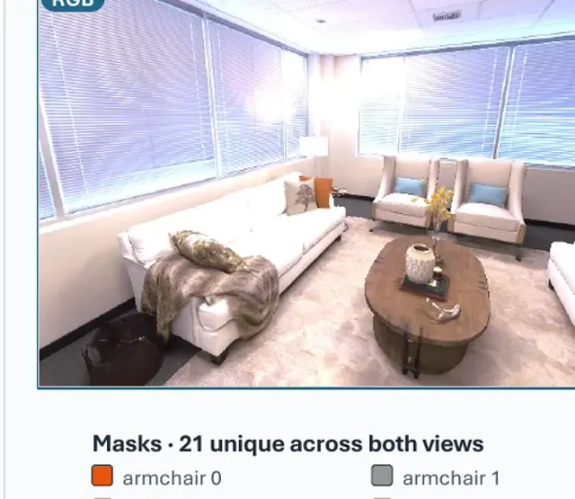
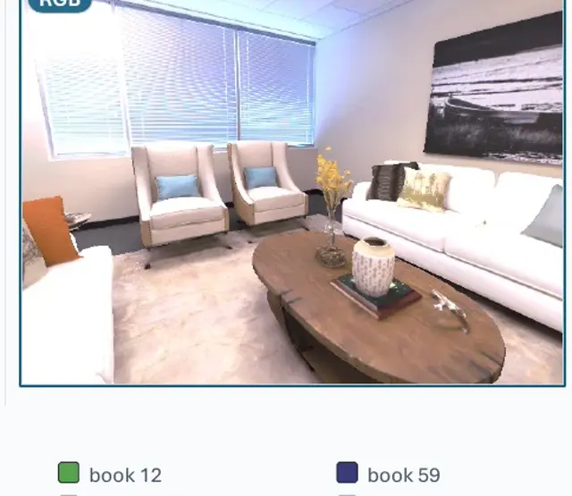
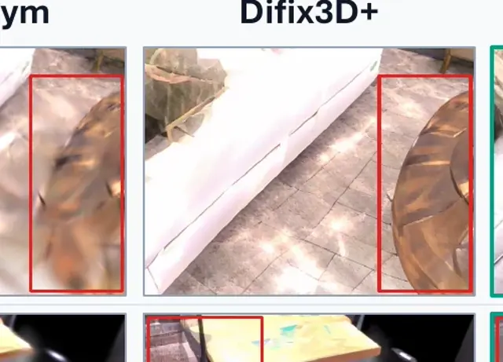

V1 Problem · Concrete Replica example
V2 prototype — based on the same room_0 evidence used by the paper pipeline.
11 s · silent · auto-loop
01 · PROBLEM
A person captures a few viewsSparse RGB observations anchor the scene.
SAME REPLICA ROOM · DIFFERENT G1 STATES
Robots visit different statesPosition, body pose, and mounted-camera direction change.


LOWER VIEWPOINT
NEW OCCLUSIONS
DIFFERENT VISIBLE SURFACESCapture views do not directly support every robot-visited view.That capture–consumption support gap is the problem R2S-EGO targets.
Review focus: Does the capture → robot states → ego-view mismatch read without narration?